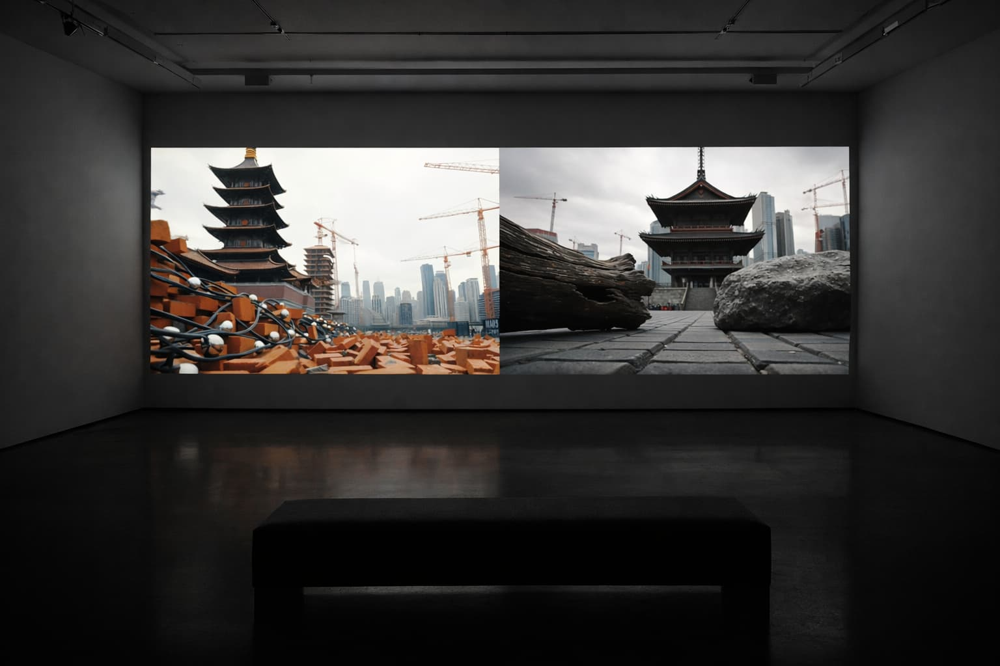
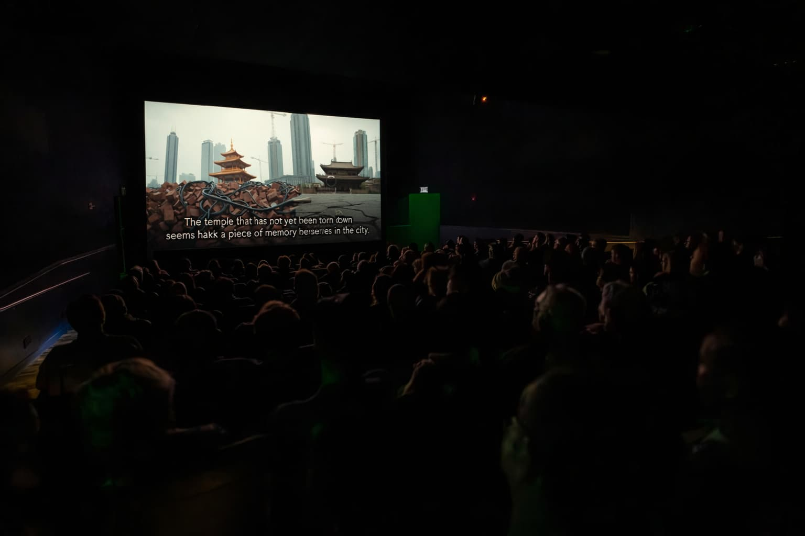
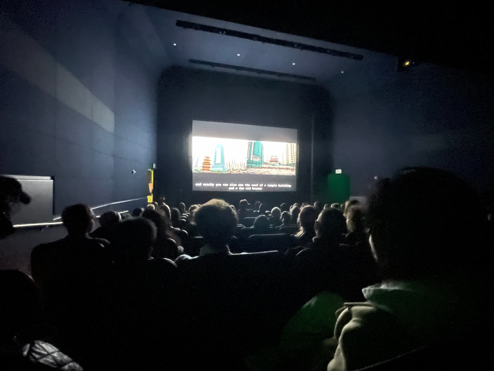

×
AI-driven Video Artwork • 2025



Infinity Evolving World is an AI-driven video artwork emerging from Taiwan’s urban and ecological condition as a highly technologized island shaped by climate vulnerability, energy dependency, and geopolitical pressure. The project originates from a photograph of a demolished traditional market site, reflecting patterns of land extraction and redevelopment under global capitalist competition.
Using a custom-built recursive image generation system, the work produces evolving synthetic cityscapes that progressively exaggerate architectural growth into unstable and surreal forms. Continuous input-output iterations amplify the anxiety of East Asian cities trying to catch up with Western models of modernization, while environmental memory, community life, and local ecologies are gradually erased.
The accompanying soundscape, composed from field recordings and spoken narratives from the original site, creates a dissonance between lived experience and computational simulation. Situated within Taiwan’s socio-political and environmental context, the project examines how AI technologies become entangled with extractive urbanism, technological acceleration, and ecological precarity in the Global East.